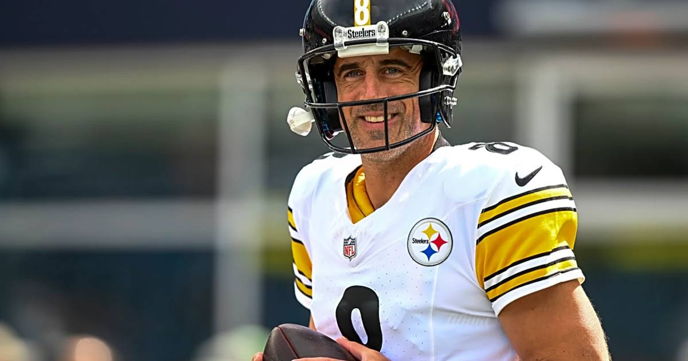

Aaron Rodgers' NFL options dwindling after Steelers divorce
Dianna Russini asked around with multiple teams and found no taker for Aaron Rodgers — with the waiver clock running out at 4 p.m. ET today, his final season may already be over.

Disclosure: this post contains affiliate links. I earn a commission on qualifying purchases.
No taker
Aaron Rodgers is on waivers, and so far nobody wants him.
NFL insider Dianna Russini checked with teams around the league on Wednesday and came back empty. "I've asked around about Aaron Rodgers with multiple teams," she wrote on X. "Right now, there's no taker. Injuries can change situations in an instant, but in what's supposed to be his final season, his options appear limited."
It is the quiet epilogue to the loudest 24 hours of the season. Rodgers was benched Tuesday night, torched head coach Mike McCarthy on the Pat McAfee Show on Wednesday morning, and was released by the Steelers about an hour later. Now the four-time MVP is waiting to see whether any team in the league will claim him — and the early answer is no.
The clock
The waiver window closes at 4 p.m. ET on Thursday, November 26. If no team claims him by then, Rodgers becomes a free agent and can sign anywhere.
That is a narrow window by design. With seven weeks left in the regular season and the trade deadline already passed, any team that picks him up is getting a rental for the stretch run — not a building block. And with most of the league either set at quarterback or already out of contention, the list of plausible landing spots is short.
Why nobody's biting
The Patriots and Ravens are the two names that keep surfacing — New England and Baltimore both have quarterback situations worth watching — but neither team has publicly shown interest, and Russini's reporting suggests the interest isn't there privately either.
Part of that is timing. The teams with the biggest holes under center, like the Giants and Vikings, addressed them before the trade deadline. Part of it is the player. Rodgers turns 43 next week and has said all year that 2026 is his final season, so a claim means inheriting the remainder of a one-year, $22.5 million deal for a quarterback who has already announced his exit.
And part of it is the exit itself. Any team that claims him is inviting in a quarterback who just publicly buried his head coach hours after being benched. The talent is not in question — he went 6-4 in 10 starts for Pittsburgh, throwing for 2,241 yards with 16 touchdowns and six interceptions — but the last 24 hours gave every front office a reason to pass.
Has he played his last game?
Clay Matthews, who spent 10 seasons alongside Rodgers in Green Bay, thinks the answer might be yes. Working as a Netflix analyst before the Packers-Rams game on Wednesday night, Matthews was asked whether fans had already seen Rodgers' last game.
"I think this is the last time we see him," Matthews said. "I don't think another team wants him as a QB right now."
That is not a report — it is one former teammate's read. But it lands the same way Russini's reporting does: the league has had a day to make a move on a four-time MVP, and nobody has.
The waiver deadline is the next inflection point. If the clock runs out at 4 p.m. and Rodgers clears, he becomes a free agent — still available to any team, still one injury away from a phone call. Russini's caveat is the only opening left: injuries change situations in an instant. Until one does, the most decorated quarterback of his generation is out of a job in the final weeks of his final season.
Watch
Watch: Pittsburgh Steelers release QB Aaron Rodgers — CBS 21 News. A news report on the release, covering the benching, the McAfee interview, and the fallout in Pittsburgh.
Sources
• Aaron Rodgers' NFL options dwindling after ugly Steelers divorce (New York Post)